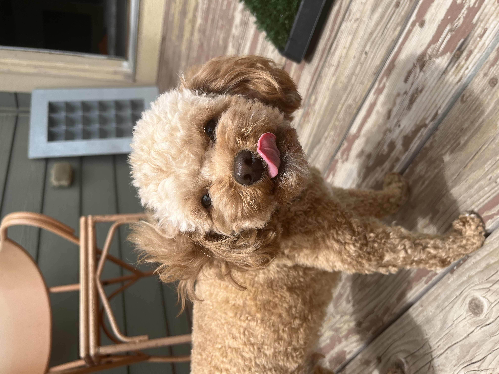

(Featuring my cavapoos, Remy and Lana)

These sweet-natured, adaptable dogs love being the center of attention and are a top choice for any family. A cross between a Cavalier King Charles Spaniel and a Poodle, these so-called ‘designer dogs’ (a cross between two pure breeds) are sweet-natured, great with children and known to make good therapy dogs. As yet unrecognised as a breed by the Kennel Club, the low shedding Cavapoo is the smaller cousin of the much-loved Cockapoo and is also known as a Cavoodle, Cavadoo or a Cavapoodle.

Size: Small to medium
Coat: Genereally low-shedding
Exercise: 1 hour a day
Life span: 10-15 years
Breed group: Cross-breed
Temperament: Sweet, friendly, intelligent, sensitive
The intelligence of a Poodle mixed with the sweet nature of a Cavalier King Charles Spaniel means that the Cavapoo has one of the most appealing and adaptable personalities of any dog.
Cavapoos are extremely social dogs and form a strong attachment to their owners and the people around them. They thrive on attention and interaction, they’re great with children and they love being part of a household – all of which make them a fantastic family dog.
Their sweet nature, intelligence and adaptability means they respond well to training and fit in easily with most lifestyles. They are an ideal breed for first-time dog owners.
Cavapoos are little bags of energy and very playful. This means they need the right amount of daily exercise and stimulation to avoid boredom – they love nothing more than a game of fetch. In fact, Cavapoos are known to excel at all sorts of canine sports.
As a very sensitive breed, Cavapoos are gentle and loving which means they often make great therapy dogs.
Because they form such a strong bond with their owners and other human companions, Cavapoos can often suffer from separation anxiety if left alone for long periods of time. This can sometimes result in excessive barking or being destructive around the home.
By inheriting some of the best traits from its parents, the Cavapoo is an extremely trainable and obedient breed that loves to please its owner. With lots of energy to burn and an inquisitive nature, be sure to give it plenty of exercise and mental stimulation.
Training tips: Cavapoos are very intelligent which makes training easy. As with many other dogs, the sooner the training and socialisation starts the better, ideally from a young age and as soon as they arrive in the home.
Their sensitive nature means Cavapoos don’t respond well to heavy-handed training. Be gentle, give them plenty of one-to-one attention and use lots of positive reinforcement.
Keeping them happy: Being very smart and sociable dogs means Cavapoos need lots of mental stimulation to avoid boredom. They love lots of human interaction, attention and affection so feel free to give them as much of this as possible.
Knowing their place in the pack is very important to this breed, so they’ll be happy and obedient companions with plenty of consistent training and direction.
Exercise: As an energetic dog, Cavapoos should get plenty of regular exercise – ideally an hour every day. This should include at least one long walk and plenty of time in a secure garden or enclosed open space to sniff around and explore.
Game ideas: A Cavapoo’s playful side means it tends to excel in lots of canine sports and they can often be seen taking part in shows and competitions. Being an energetic breed means they enjoy activities like agility courses where jumping over hurdles, running through tunnels and weaving through poles challenges their minds as well as their bodies.
All dogs love a game of fetch, but with a retriever instinct thanks to their Poodle heritage, Cavapoos enjoy it more than most. Their inquisitive nature and love of interaction means that games such as hide and seek work well too.
Cavapoo coats come in a wide variety of colors, lengths and textures. The dominance of their parents’ genes will dictate whether your pet has a longer, silky coat (from the Cavalier King Charles Spaniel) or a short and curly coat (from the Poodle).
Your Cavapoo’s grooming regime will depend on the type of coat they inherited. Generally speaking, giving your dog’s coat a daily brush is recommended, especially for longer coats. This will help prevent any unwanted knots, tangles or matting. Professional grooming is recommended every 4-6 weeks.
Cavapoos’ sweet nature means they usually tolerate grooming well. However, as with all breeds, it’s best to allow your pet to get used to the grooming process by using a soft brush on their coat when they are puppies.
Although Cavapoos are generally low shedding, hypoallergenic dogs, this is not the case for all. Depending on the type of coat they have, some dogs can shed quite a lot of hair and all Cavapoos shed dander (flakes of skin found in an animal’s fur) that some owners can be allergic to.
Dental issues are common in Cavapoos so be sure to clean their teeth regularly to remove plaque and maintain good oral hygiene.
Use a damp cloth to clean around your dog’s eyes and ears to remove tear stains and prevent the build-up of wax.
Cavapoos aren’t usually fussy eaters, but like all dogs, giving them the best quality food is essential for them to grow into happy, healthy dogs.
Cavapoo puppies should have 3 meals a day until they are 6 months old. Mature Cavapoos are usually fed twice a day. Be careful not to overfeed as this can lead to obesity.
Always maintain a consistent diet and feeding routine. If you need to change it then do so only gradually to avoid tummy upsets, particularly in puppies.
As an active, energetic breed, Cavapoos should be fed a diet that is high in protein and carbohydrates to give them lots of energy, as well as omega fatty acids that help promote a healthy coat. Make sure your furry friend gets the right amount of exercise to burn off any extra calories and avoid an expanding waistline.
Much like their Poodle and Cavalier King Charles Spaniel parent breeds, Cavapoos can suffer from dental problems such as gingivitis or cavities. To help avoid this – and provide the nutrition they need – use good quality dry dog food that will help scrape their teeth clean.
Source: URL